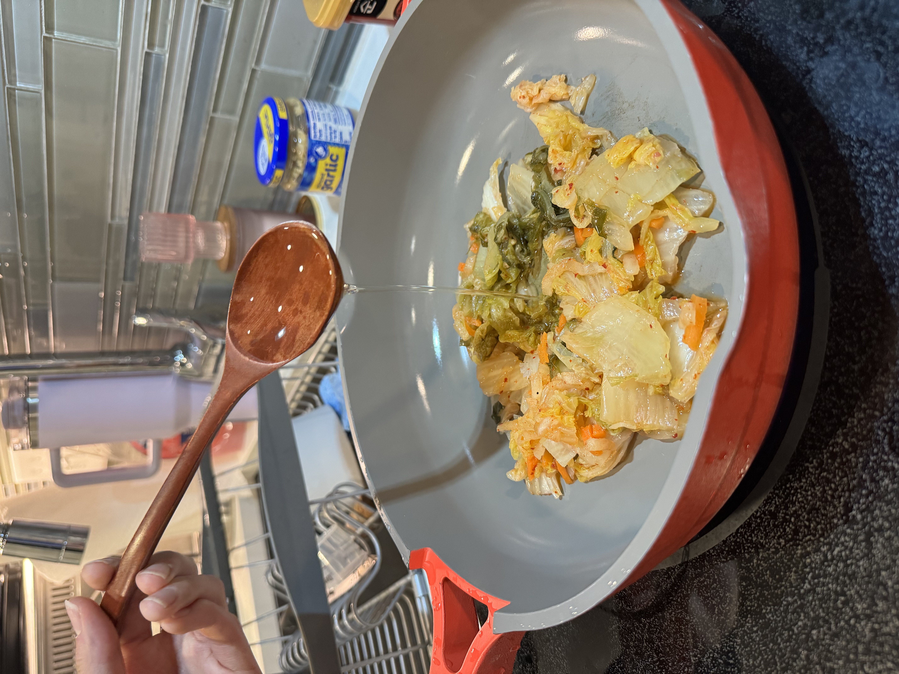
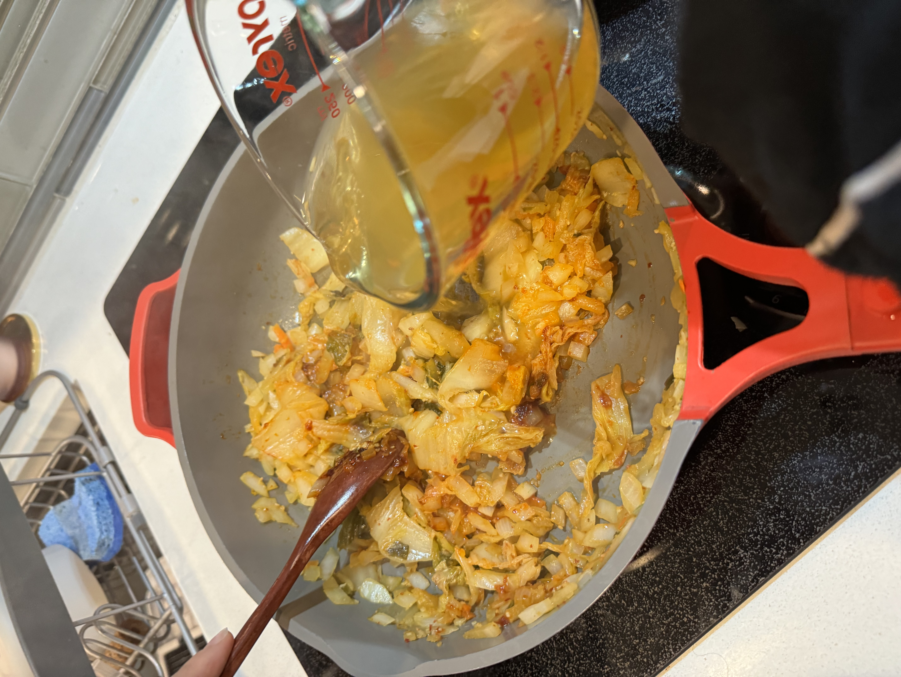
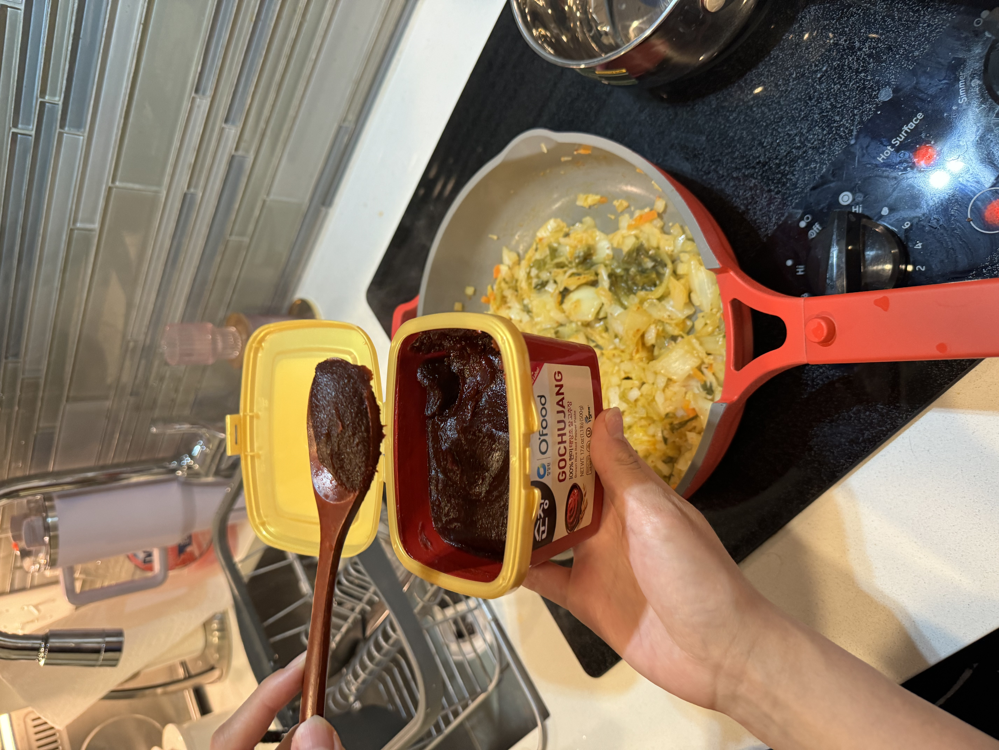
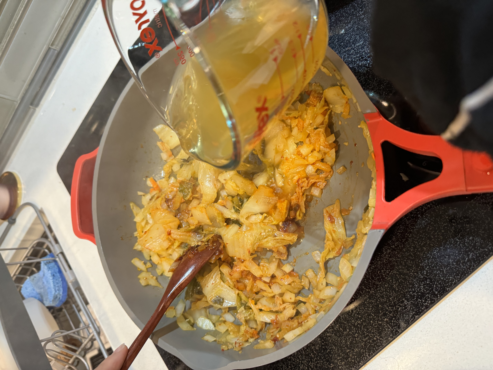
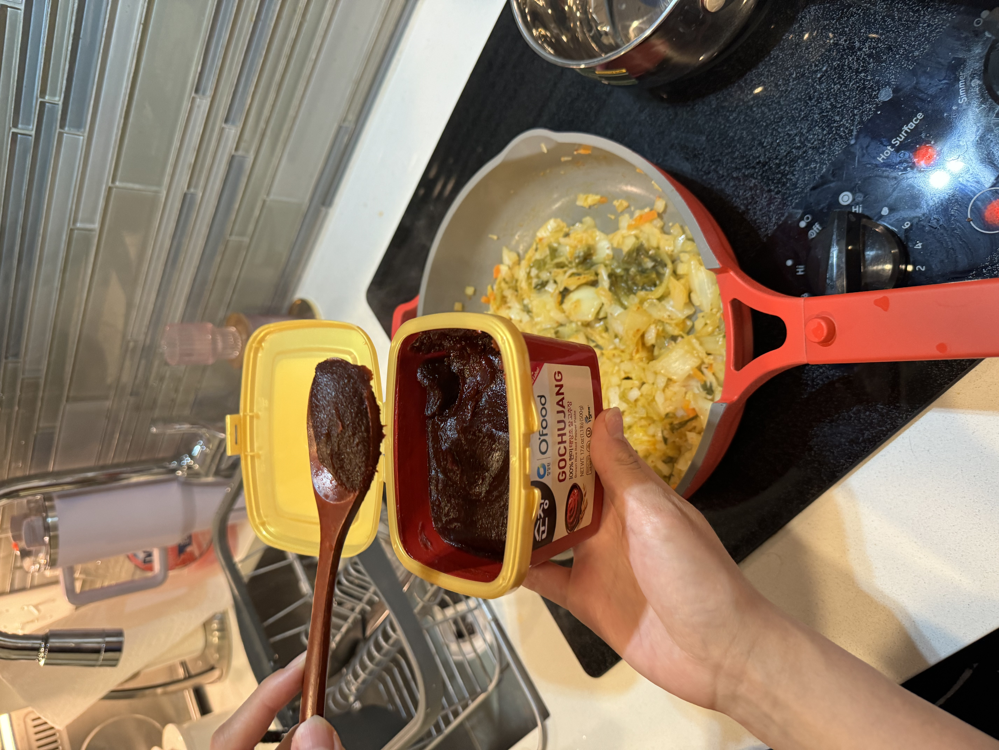
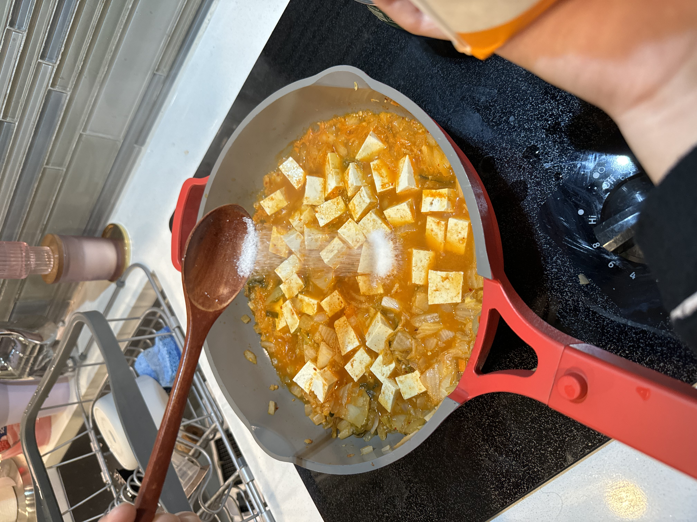
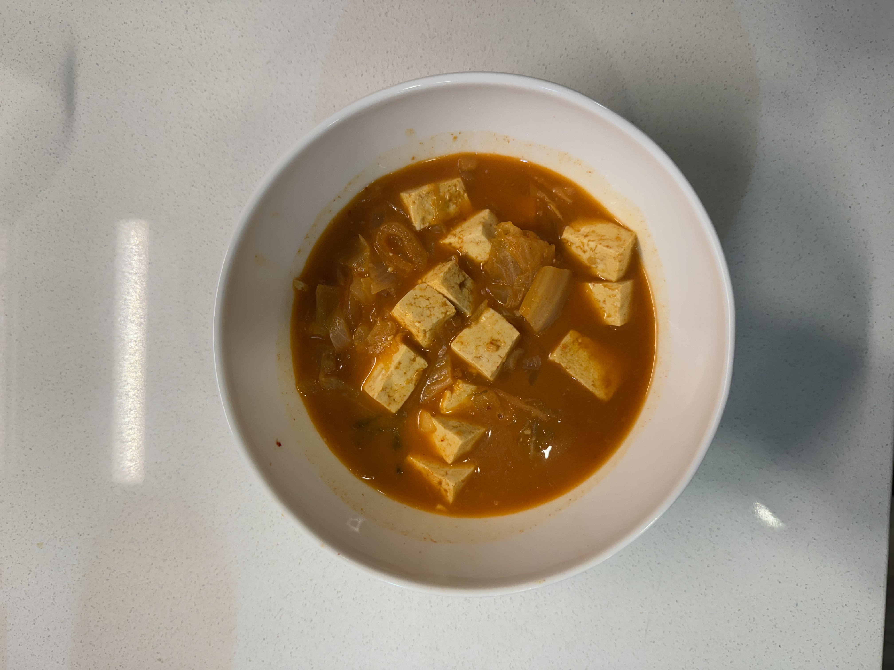

step 1
Place the kimchi and kimchi brine in a shallow pot. Add 1 teaspoon of sesame oil and stir-fry well.
step 2
Dice onions and add them to the pot. Add (vegtable) stock, Gochujang, and crushed garlic.
 



step 3
Cover and cook for 10 minutes over medium high heat.

step 4
Lay the tofu over top.

step 5
Open and mix in the seasoning with 2 teaspoons of sugar.
step 6
Cover and cook for another 15~20 minutes over medium heat.
step 7
Remove from the heat and serve right away!
